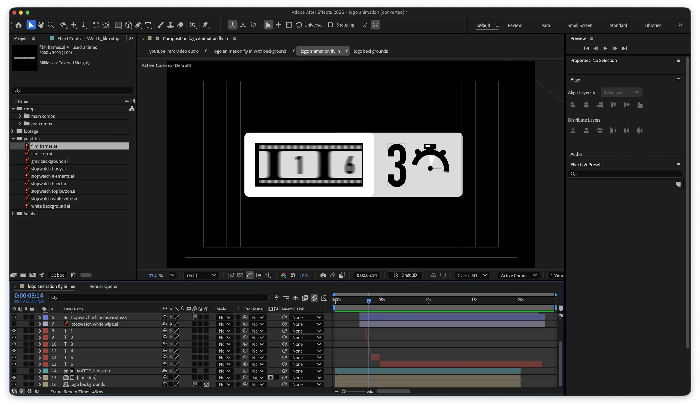
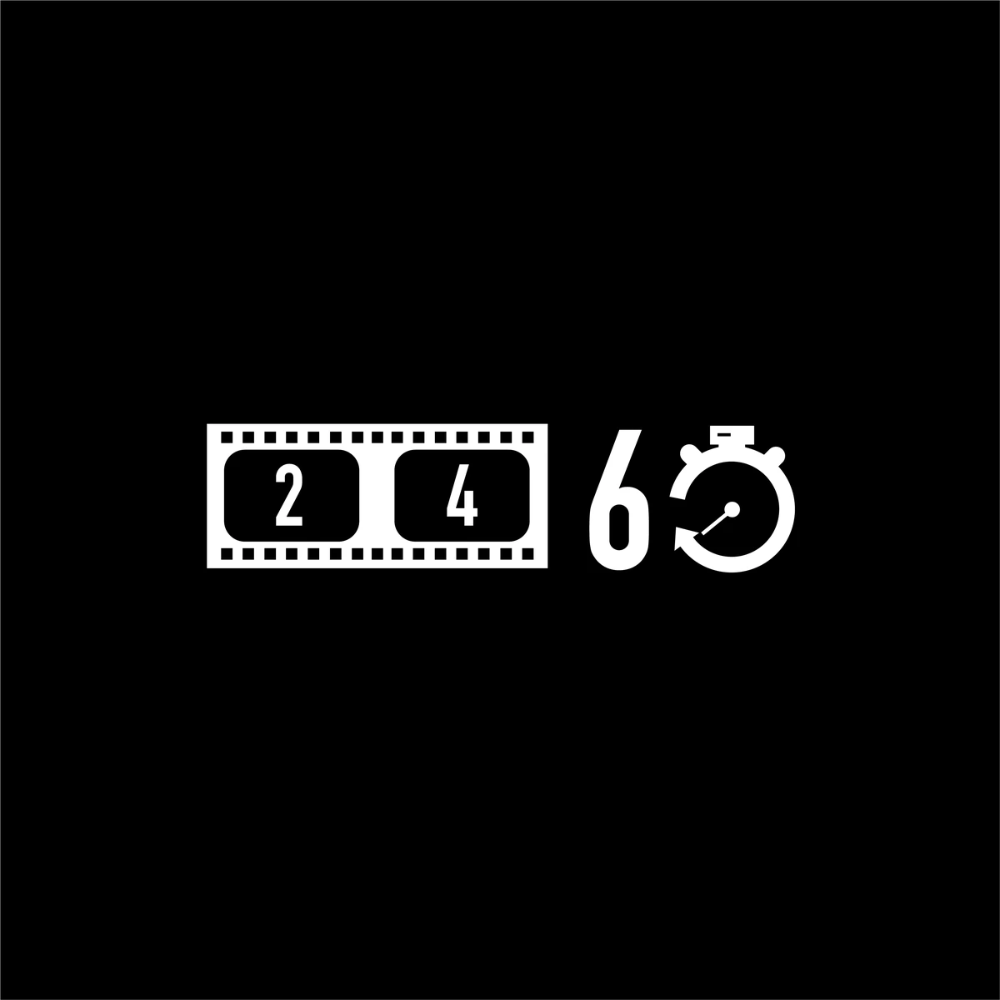
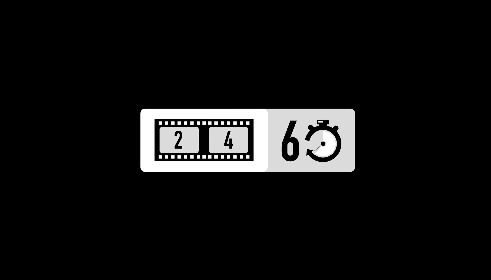
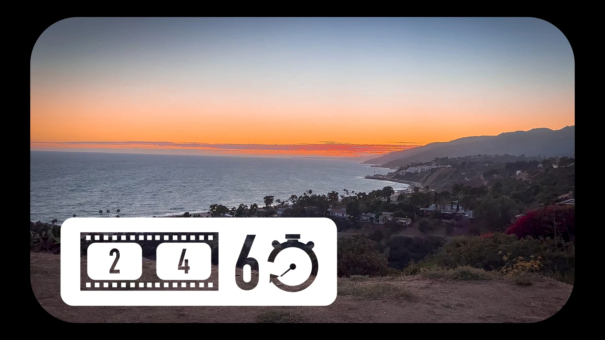

24/60 Film Productions Logo & Branding
24/60 Film Productions, a local video production company, asked me to design a logo for their business, along with branding assets for their promotional video content: a logo animation, social banners, avatars, and a watermark. The promotional video below puts the new branding to work.
For the logo, I leaned into the idea behind their name. Twenty-four frames per second is the typical frame rate for cinematic feature films, and 60 is the typical length of the video projects clients hire them to complete. I combined a film strip, a frame counter, and a stopwatch into a mark that represents film, frame rate, and the passage of a specific amount of time.



